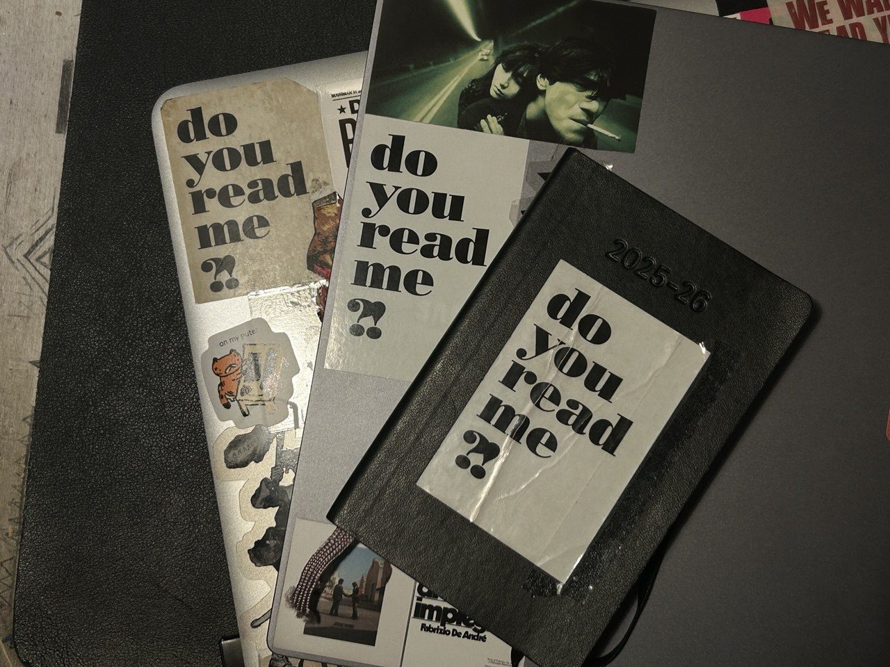

my favourite bookstores ! (some of)
places in rome
libreria trastevere
via della Lungaretta, 90/e - [site]
very very small but full of great picks!! great selection of smaller publishing companies, cozy vibe (i also like that some books are 'hidden' on lower or higher shelves). they also have more books in english than you'd expect from a space that small.
MACRO's bookstore
via Nizza, 138 - [site]
probably my favourite museum bookstore. (museum bookstores are hugely underrated as just-bookstores). very cool art books, great english picks, and fun trinkets. i quite like the interior design, too.
libreria tuba
via del Pigneto, 39/a - [site]
queer/feminist classic. great to go get an aperitivo, very interesting events with authors. a staple. highly recommend visiting.
spazio sette
via dei Barbieri,7 - [site]
i had a very nice chat with one of the booksellers, who shared my passion for clarice lispector and recommended ingeborg bachmann (real), celan and finally fleur jaeggy's 'sweet days of discipline' to me (which i did buy and enjoyed a fair amount).
the bookstore is stunning, and i quite like their selection ! i've never sat at the café, but i plan to
altroquando + otherwise
via del Governo Vecchio, 82 + 80 - [site (aq)] [site (ow)]
both very nice bookstores !! i actually haven't had the chance to try altroquando's pub yet, which is an absolute shame (a bookstore that's also a pub ?? literally my dream) (otherwise is an international bookstore, while altroquando is italian - &they're on the same street)
libreria antigone
via dei Piceni, 1 - [site]
great queer bookstore ! a bit too modern-looking in my opinion, but queer and feminist bookstores are always appreciated. (there's one in milan, too ! i've never been though)
in the rest of the world
she said
Kottbusser Damm, 79, berlin - [site]
i've been to berlin 3 times and i've visited she said every single time !! feminist/queer bookstore, great selection, and i love the bar, too (they actually get their matcha / hojicha from a shop/bar that i really like ! (mamecha))
do you read me?!
Auguststraße, 28, berlin - [site]
very particular place - magazine bookshop (carries books too) with a lot of things you wouldn't find anywhere else. i love it, and yet i can never find anything that is 'me' enough to buy (i know nothing about contemporary art/graphics/cooking/obscure topic-magazines, sadly). i do really like their logo and have it everywhere though:
(i also have their tote bag...)
Dussmann das KulturKaufhaus
Friedrichstraße, 90, berlin - [site]
okay, probably the most famous bookstore in berlin... not a niche pick at all. but it's crazy....... every time i've been, i've felt like i could just start living there. they have vinyls and weird trinkets and so many books and their bar has a record player and vinyls displayed on shelves?? also the english bookstore section is its own section and yet pretty big ?? aaaa, i wish we had a three-floor bookstore like it in rome.
(also, fun fact, its armchairs saved me at least twice the second time i went to berlin, when i was staying at a family friend's house in grunewald and was spending the entire day walking around to get the most out of the vacation)
shakespeare and company (unoriginal pick)
37, rue de la Bûcherie, paris - [site]
obvious pick, but always very beautiful. i quite like their recommendations, actually. also, love this postcard i got the last time i went (and keep in my notebook):

gay's the word
66 Marchmont st, london - [site]
the bookstore from pride !! such a comfort movie. have to go back to london and visit again !!!